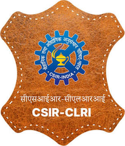
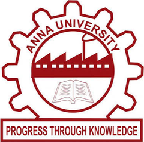

I'm a chemical and biological engineer and PhD researcher at Purdue University, working where pharmaceutical manufacturing, AI/ML, process systems engineering and sustainability meet. My goal is to connect molecules, processes and industrial networks to make pharmaceutical and chemical manufacturing more intelligent, resilient and sustainable.
On the manufacturing side, I work on continuous manufacturing, digital twins, CMC automation and hybrid, physics-informed machine learning, using Aspen Plus, Python and cheminformatics tools such as RDKit and QSAR/QSPR models. On the sustainability side, I use life cycle assessment, techno-economic analysis, material flow analysis and physical input–output tables to study circularity, supply-chain resilience and onshoring.
I've authored 6 peer-reviewed publications and presented at AIChE, with research supported by an NSF Future Manufacturing Research Grant. If you're working on similar problems, I'd love to talk. Reach me by email or on LinkedIn.
Experience
Graduate Researcher2023 – PresentSINCS Lab, Purdue University
Project Scientist2022 – 2023Indian Institute of Technology (IIT) Madras

Research Intern2021 – 2022CSIR–Central Leather Research Institute (CLRI)
Education
PhD in Bio-engineering2025 – PresentPurdue University
MS Thesis, Computational Science and Engineering2023 – 2025Purdue University

BTech in Chemical Engineering2018 – 2022Anna University, Chennai
Projects
Research on sustainable, resilient pharmaceutical manufacturing
Agentic AI and Satellite-Informed Life Cycle Assessment for Pharmaceutical API Manufacturing Ongoing
2026 – Present
Automating life cycle assessment (LCA) and checking carbon footprints of pharmaceutical manufacturing against satellite data.
Multi-agent LLM workflow (LangGraph + RAG) that builds LCA inventories from Aspen Plus models and drafts ISO 14040/44-aligned interpretations for API synthesis routes.
Fuses satellite CO₂ and NO₂ observations (OCO-2/3, TROPOMI) with EPA facility-level GHG reporting to compare bottom-up and top-down emission estimates for U.S. pharmaceutical and chemical plants.
Extends the 47+ industry EW-MFA network to Scope 1–3 carbon footprints for API onshoring scenarios.
Agentic AI · LLMs · LCA · Remote Sensing · Aspen Plus
Process-Informed EW-MFA for Onshoring Acetaminophen API Manufacturing in the U.S. Ongoing
2025 – Present
Quantifying how changes in pharmaceutical demand cascade through the U.S. chemical manufacturing network.
Economy-wide material flow analysis (EW-MFA) coupled with physical input–output tables (PIOTs).
Aspen Plus models for 47+ process-level industries across key NAICS chemical sectors, linking unit-operation mass balances to national supply-chain flows.
Simulated onshoring scenarios from 0.8× to 2.0× current acetaminophen output, revealing nonlinear upstream cascades (AIChE 2026).
Material Flow Analysis · Supply Chain Resilience · Aspen Plus · Process Systems Engineering
Hybrid Physics-Informed ML for Real-Time Quality Control in Continuous API Manufacturing Ongoing
2025 – Present
A hybrid mechanistic and data-driven surrogate for Quality-by-Design control of continuous acetaminophen manufacturing.
Coupled with Aspen Plus to optimize operating parameters, cutting predicted batch-to-batch variability by ~35% and design iterations from days to minutes.
Physics-Informed ML · Surrogate Modeling · Optimization · Quality by Design
Hybrid Mechanistic Surrogates for Solvent Recovery Selection in Pharmaceutical Manufacturing Completed
2023 – 2025 · MS thesis
A multi-scale framework to screen and rank solvent recovery technologies for pharmaceutical waste streams.
Integrates solvent chemistry, Aspen Plus process models and machine-learning surrogates.
Trained surrogates replace repeated rigorous simulations, speeding up comparison of recovery routes on process performance and sustainability.